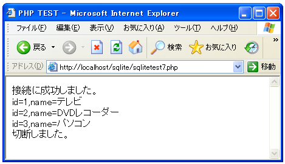

- Home ›
- PHP入門 ›
- SQLiteへの接続
データの取得(SELECT)
次にデータの取得を行います。SELECTを使いますが、今回は結果を取得するので「sqlite_query」関数を使います。
「sqlite_query」関数を実行した結果resource型の値を受け取りますが、その中にはSELECTの結果としての複数のフィールドに関する値が複数の行数分だけ帰ってきています。
resource型の値から実際のデータを取り出すためには「sqlite_fetch_array」関数を使います。
sqlite_fetch_array array sqlite_fetch_array(resource result [, int result_type [, bool decode_binary]])
指定した結果ハンドル result から次のレコードを取得 します。レコードがも
うない場合は FALSEを返し、それ以外は レコードデータを含む連想配列を返し
ます。
引数:
result SQLite 結果リソース。
result_type オプションの result_type パラメータには定数を指定でき、返
される配列の添字を定義します。 SQLITE_ASSOC を用いると、連想配列の添
字(名前フィールド)のみが 返されます。一方、SQLITE_NUM は、数値の添字
(フィールド番号)のみを返します。SQLITE_BOTH は、連想配列の添字と数値
の添字の両方を返します。SQLITE_BOTH がこの関数のデフォルトです。
decode_binary decode_binary パラメータが TRUE (デフォルト)に 設定され
た場合、PHP はバイナリエンコーディングをデコードします。 これは、
sqlite_escape_string() によりエンコードされたデータに適用されます。
sqlite をサポートする他のアプリケーションにより作成されたデータベー
スを処理する時以外は、この値をデフォルトのままにしておくべきです。
返り値:
結果セットの次レコードの配列を返します。 次レコードの位置が最終レコー
ド以降の場合、FALSE を返します。
「result_type」の値で結果をどのような配列として取得するかを指定できます。「SQLITE_NUM」の場合は0から始まる数値のインデックスで配列にアクセスできます。「SQLITE_ASSOC」の場合は項目名による連想配列の形です。
例として下記のようなSELECTを発行した場合で考えて見ます。
$sql = "SELECT id, name FROM shouhin";
$result = sqlite_query($link, $sql, SQLITE_BOTH, $sqliteerror);
if (!$result) {
die('クエリーが失敗しました。'.$sqliteerror);
}
「SQLITE_NUM」を指定する場合は下記のようになります。
$rows = sqlite_fetch_array($result, SQLITE_NUM); print($rows[0]); print($rows[1]);
「SQLITE_ASSOC」を指定する場合は下記のようになります。
$rows = sqlite_fetch_array($result, SQLITE_ASSOC); print($rows['id']); print($rows['name']);
次に全ての行を取得する時に、結果としていくつの行が帰ってきたかを確認する方法です。「sqlite_num_rows」関数を使います。
sqlite_num_rows int sqlite_num_rows(resource result)
バッファされた結果セット result のレコード数を返します。 引数: result SQLite 結果リソース。 返り値: レコード数
以上のことからクエリーの結果に含まれる全ての行のデータを取り出すには、下記のような感じで記述します。
$sql = "SELECT id, name FROM shouhin";
$result = sqlite_query($link, $sql, SQLITE_BOTH, $sqliteerror);
if (!$result) {
die('クエリーが失敗しました。'.$sqliteerror);
}
for ($i = 0 ; $i < sqlite_num_rows($result) ; $i++){
$rows = sqlite_fetch_array($result, SQLITE_ASSOC);
print($rows['id']);
print($rows['name']);
}
では実際に試してみます。
<html>
<head><title>PHP TEST</title></head>
<body>
<?php
$link = sqlite_open('test.db', 0666, $sqliteerror);
if (!$link) {
die('接続失敗です。'.$sqliteerror);
}
print('接続に成功しました。<br>');
$sql = "SELECT id, name FROM shouhin";
$result = sqlite_query($link, $sql, SQLITE_BOTH, $sqliteerror);
if (!$result) {
die('クエリーが失敗しました。'.$sqliteerror);
}
for ($i = 0 ; $i < sqlite_num_rows($result) ; $i++){
$rows = sqlite_fetch_array($result, SQLITE_ASSOC);
print('id='.$rows['id']);
print(',name='.$rows['name'].'<br>');
}
sqlite_close($link);
print('切断しました。<br>');
?>
</body>
</html>
上記ファイルをWWWサーバに設置しブラウザ経由で見ると下記のように表示されます。

今までテーブルに追加してきたデータを取得できました。
( Written by Tatsuo Ikura )

著者 / TATSUO IKURA
初心者～中級者の方を対象としたプログラミング方法や開発環境の構築の解説を行うサイトの運営を行っています。